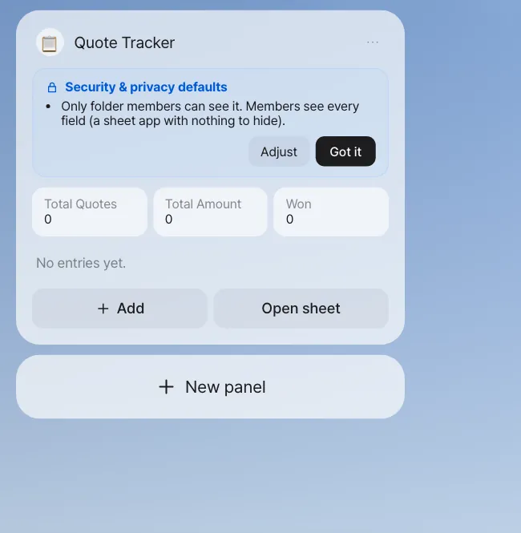
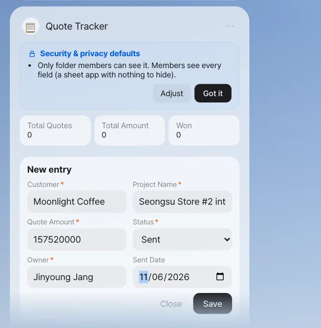
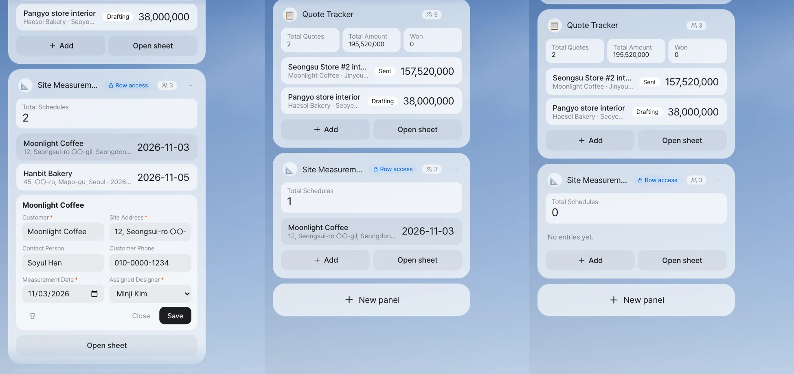

How many quotes have gone out, and who's going to which site to measure, and when? Small tables a team looks at together quickly multiply into several copies when you run them as Excel files. A panel app is a mini app on Home that you make with a single request. It keeps the data in one place, in a sheet in a shared folder or in a database, and the app protects which rows and fields each person you share it with can see.
Why panel apps#
The scheduled mission in Chapter 11 reports results to just you. This time, it's information the team looks at together.
Once the Moonlight Coffee quote goes out, team lead Jinyoung Jang opens Excel every time to count "how many quotes have gone out and what they add up to." Seoyeon Park makes a separate table for Finance, and Minji Kim asks about the site measurement schedule over the messenger. The same information lives in three places.
A panel app brings it together in one place.
| Feature | Details |
|---|---|
| You make it by asking | "Make a quote tracker panel…" — the assistant designs the fields, choices and summary numbers |
| It lives on Home | It's attached as a card on Home, to the left of the chat, with summary tiles (total count, total amount and so on), a list, and Add and Open sheet |
| One copy of the data | A sheet app uses an .xlsx in a shared folder; an app that needs security uses a database |
| You use it together | Shared with folder members. Every change records who changed what |
| Safe by default | If there are fields to hide, it automatically keeps the data in a database and protects what can be seen row by row and field by field |
Try it 1 — a quote tracker (sheet app)#
Make a quote tracker panel. It's an app for registering and managing the customer, project name, quote amount, status (Drafting, Sent, Won, Lost), owner and sent date, and I'll use it with my teammates.
In our run, about 15 seconds later, an answer arrived with the chip "'Quote Tracker' is now on Home · Quote Tracker folder", and a panel appeared on Home (the assistant names the app, so the capitals may differ).

Check: The assistant's answer lists the fields (Customer*, Project Name*, Quote Amount(number)*, Status(Drafting/Sent/Won/Lost)*, Owner*, Sent Date(date)) and where the data is ("the Quote Tracker.xlsx sheet in the 'Quote Tracker' folder"). * marks required fields.
Read the Security & privacy defaults card above the panel and click Got it. This is a sheet app with no fields to hide, so it says "Only folder members can see it. Members see every field." You can't share the app until its creator has confirmed this card.
Click Add, and the New entry form opens. Enter the Moonlight Coffee quote (in our run: Seongsu Store #2 interior design & construction, ₩157,520,000, Sent, Jinyoung Jang, 2026-11-06).

When you save, the summary tiles change right away. Click Open sheet, and the same data opens as an IeumOffice sheet, and values you edit and save in the sheet show up in the panel too. You can also add rows through chat.
Add to the Quote Tracker: customer Haesol Bakery, project Pangyo store interior, quote amount ₩38M, status Drafting, owner Seoyeon Park.
The assistant answers "Added to Quote Tracker: … (2 in all)", and the panel gains a row. Write the app's name exactly as the panel shows it: in our run, "Add to the Quote tracker: …" (lowercase t) wasn't recognized as the app and went to the folder as a variation instead. You can write amounts in shorthand like ₩38M or 1.2M and they're still read as numbers (38,000,000), and large amounts in the summary tiles are shortened to fit inside the tile. Just like the form, it won't save if a required field is missing. Sometimes the assistant leaves out the amount and answers "I couldn't change it: Please fill in 'Quote amount'." If that happens, send the same sentence again or use Add on the panel.
Try it 2 — share it with teammates#
In the panel menu (⋯), use Share to add Minji Kim and Seoyeon Park as folder members (Edit — Edit and merge main). The panel header shows the member count (3, next to the person icon), and the same panel appears on both their Homes. When someone adds a row, the other members' panels refresh right away.
The data is in a shared folder, so on the folder screen in Chapter 13 you can see apps/Quote Tracker.xlsx and the definition file Quote Tracker.panel.json, and every added row leaves a record in the folder's history.
Try it 3 — a site measurement schedule (database app)#
This time it's an app that holds customer contact details and site addresses.
Make a site measurement schedule panel. Track the customer, site address, customer contact person, customer phone, measurement date and assigned designer. The customer phone is personal information, so only the assigned designer and the creator can see it, and only the assigned designer can edit their own schedule entries.
The assistant's answer is different from the previous app (the original text from our run, shortened).
The data is stored in the database with row-level access.
Access: View — every member / Create — every member / Edit — when 'Assigned Designer' is me or the folder owner /
Delete — whoever created it or when 'Assigned Designer' is me or the folder owner
And the defaults card says "'Site Address' is personal information, so only the person themselves (the subject), whoever recorded it and the folder owner (manager) can see it. Other members see 'Private'" (the same for 'Contact Person' and 'Customer Phone') and "Some fields must stay hidden, so the data is kept in the database rather than in the shared folder's sheet." The panel header gets a Row access badge with a lock.
In our run, the assistant read "only the assigned designer and the creator can see it" as being about the phone number only, so every member could still see every entry (with the personal fields shown as 'Private'). Asking again with "Each schedule entry can be seen only by its assigned designer and the creator" gave the same rule. So we narrowed it ourselves: panel menu (⋯) › Permission rules › under View, turn off All members and turn on Creator and Rows where 'Assigned Designer' is me; under Edit and Delete, keep Rows where 'Assigned Designer' is me and Folder owner; then Save rules. Check the rules line in the answer every time, and adjust them here when they don't say what you meant.
Why a database#
Anyone who can open a sheet file sees the whole file. There's no way to hide just one cell. So when there are fields to hide, or row rules like "only the person themselves can edit", a panel app keeps the data in a database. Then no matter who asks (the panel, the assistant in chat, a sheet copy), the database filters the data by the same rules before handing it over. The app screen can't accidentally show everything.
| Rule you said | Rule the panel app made |
|---|---|
| "The customer phone is personal information" | Field sensitivity Personal data — masked for everyone except the person themselves, whoever recorded it and the owner |
| "Only the assigned designer and the creator can see it" | Row view rule — the creator, or the assigned designer themselves (set in Permission rules in our run) |
| "Only they can edit their own" | Row edit and delete rule — the assigned designer themselves, or the folder owner |
Rules are made only from a fixed set of terms (the person themselves, the creator, role, member…), and the server turns them into database rules. You can adjust them directly in Permission rules in the panel menu (⋯). If you loosen them beyond the defaults, it asks you to confirm once more and keeps a record.
Three people's screens#
Team lead Jinyoung Jang entered two entries: Moonlight Coffee (assigned designer Minji Kim) and Hanbit Bakery (assigned designer Jinyoung Jang). Each of the three opens their own Home.

Check: Minji Kim's screen shows 1 schedule in total, and Seoyeon Park's shows 0. In the Quote Tracker (a sheet app), all three see the same count (2 in the shot). In our run, when Seoyeon Park typed Show me the Site Measurement Schedule in chat, the assistant answered "Site Measurement Schedule has no rows yet." That's because the assistant also queries the database with Seoyeon Park's access.
Apps that keep a record (event sourcing)#
For work where a balance matters, like a budget or days of leave, an app that adds records is safer than one that edits the "current value." You only add records like "Budget allocated ₩10M", "Spent ₩2.3M" and "Expense canceled", and the remaining budget is recalculated from the records.
| Ordinary app | App that keeps a record |
|---|---|
| You edit the balance cell | You add one more record |
| You have to look up separately who changed it and when | The records themselves are the history |
| If you edit it wrong, you don't know the original value | Past records can't be edited or deleted — a cancellation is a new record too |
| — | Who can do each kind of record (for example, only Finance can allocate, and you can't allocate to yourself) |
Ask like this: Make a Store #2 construction budget ledger panel. Keep budget allocations, expenses and expense cancellations as records, and calculate the balance from the records. Only Finance can allocate; anyone can record an expense.
When the record-keeping app doesn't get made
Apps like this have a lot to design, so if the assistant can't design one in a single pass, it splits the design into smaller steps and tries again. If it still can't finish, you see "I couldn't make the panel". In the current version, this can fail depending on the AI model you use (it failed when we rechecked this tutorial too), so ask again in a moment, and see how one gets made in the event-sourcing leave management video.
Security by default, in plain words#
| Default | Meaning |
|---|---|
| Members only | If you're not a folder member, you can't see the app in lists, its data, or even its counts |
| Sensitivity per field | Public / Team internal / Personal data / Sensitive data. Personal and sensitive fields are masked by default |
| Careful with totals | Team totals of sensitive numbers are shown only when there are three or more people (so no one can work out one person's value) |
| Confirm first | The creator has to read the defaults card and click Got it before sharing |
| Sheet copy | When you open a database app with Open sheet, a copy opens that holds only the rows and fields you can see |
Next#
That's the end of Part 3, "Less repetition." Just as the panel app's data was in a shared folder, working as a team means gathering materials in one place. Part 4, "Working as a team," starts with the next chapter. First, you gather the Moonlight Coffee Store #2 materials in a shared folder and bring in Minji Kim and Seoyeon Park as members (Chapter 13).
Watch the video
Making a panel app · Event-sourcing leave management · Shared calendar and row-level security
Check your understanding
- If you add the rule "Only Finance can see the quote amount" to the Quote Tracker, where is the data stored?
- Seoyeon Park can't see anything in the site measurement schedule. What could you change to show her just the Moonlight Coffee entry?
- You entered a ₩2.3M expense by mistake in the construction budget ledger. How do you correct it in an app that keeps a record?
Answer
- In a database. Once there's a field to hide (sensitive) or a row rule, a sheet can't protect it, so the data goes in a database.
- Widen the view rule (for example, set View to all members in Permission rules), or change the assigned designer on the Moonlight Coffee row to Seoyeon Park. Even if you widen viewing, the site address and phone are personal information, so Seoyeon Park sees them as 'Private'.
- Don't edit the past record. Add a new "Expense canceled" record. The balance is recalculated from the records and corrected, and the fact that it was entered by mistake stays in the history.